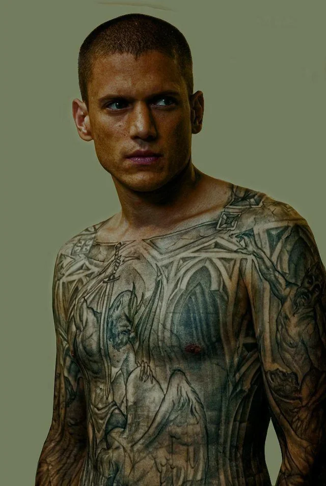
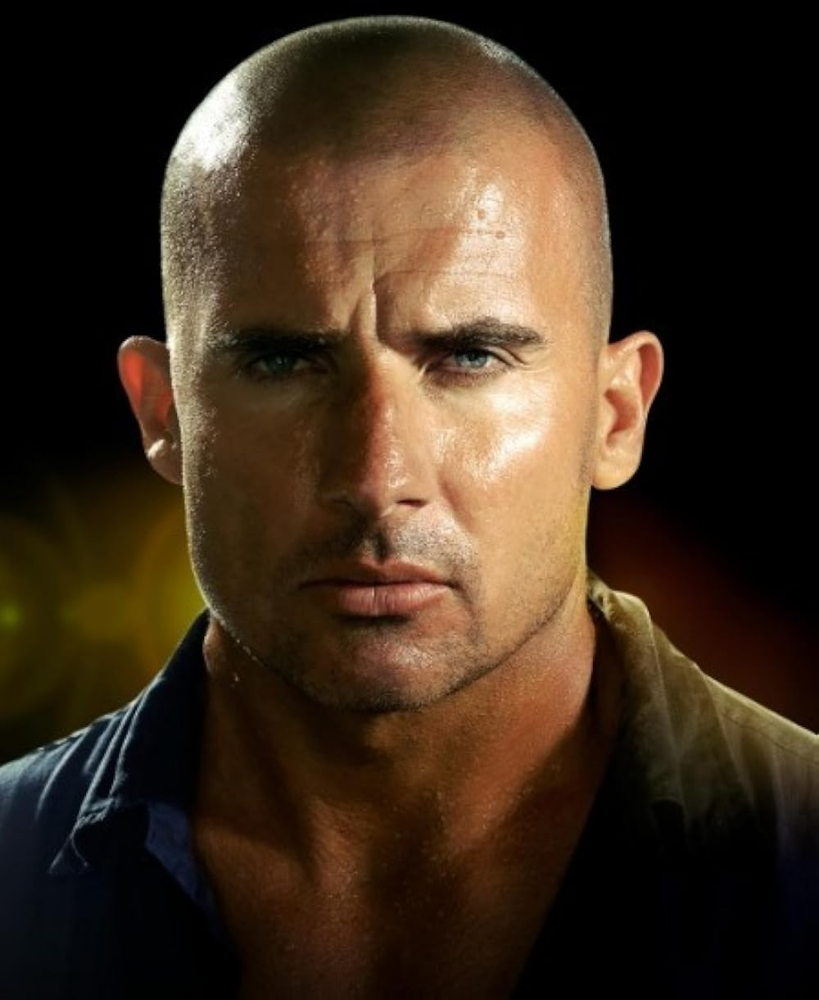
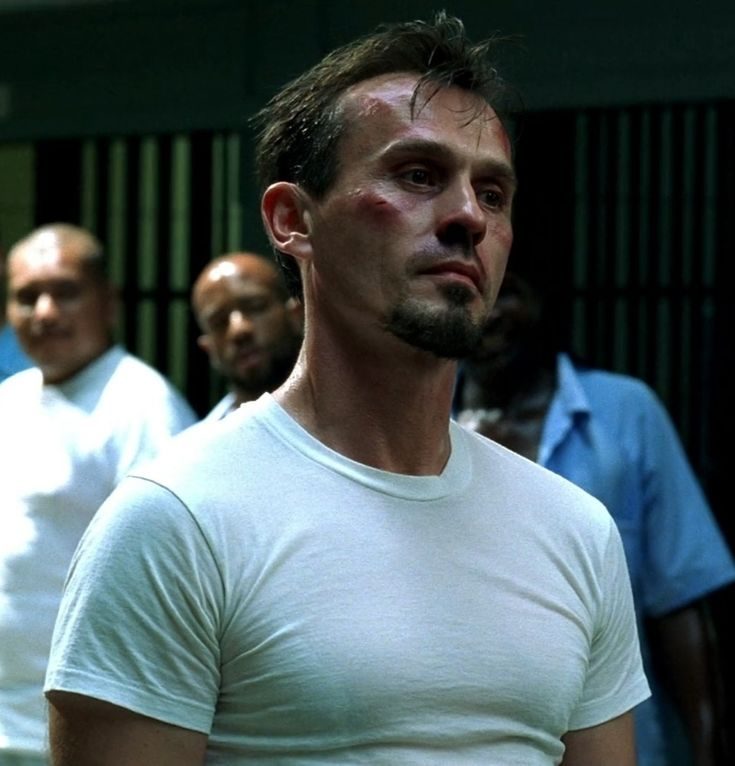
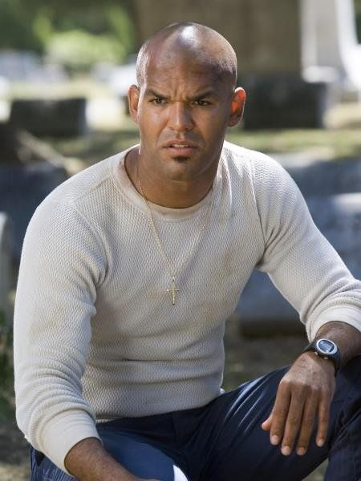

Personagens de Prison Break
Michael Scofield

Michael Scofield é o protagonista da série, interpretado por Wentworth Miller. Ele é um engenheiro estrutural brilhante que elabora um plano complexo para ajudar seu irmão Lincoln Burrows a escapar da prisão após ser condenado injustamente à morte. Michael é conhecido por sua inteligência, habilidades de planejamento e determinação em proteger sua família.
Lincoln Burrows

Lincoln Burrows é o irmão mais velho de Michael Scofield, interpretado por Dominic Purcell. Ele é condenado à morte por um crime que não cometeu, o que leva Michael a criar um elaborado plano de fuga para salvá-lo. Lincoln é um personagem corajoso e leal, disposto a enfrentar qualquer desafio para proteger sua família.
Aaron "T-Bag" Eckhart

Theodore "T-Bag" Bagwell, interpretado por Robert Knepper, é um dos personagens mais complexos e controversos da série. Ele é um criminoso manipulador e perigoso, conhecido por sua inteligência e habilidades de sobrevivência. T-Bag é um personagem que desperta tanto repulsa quanto fascínio, sendo uma presença constante e imprevisível ao longo da trama.
Sarah Boon

Sarah Tancredi, interpretada por Sarah Wayne Callies, é a médica da prisão e interesse amoroso de Michael Scofield. Ela desempenha um papel crucial na história, ajudando Michael e Lincoln em sua luta contra a injustiça. Sarah é uma personagem compassiva e determinada, que enfrenta dilemas morais enquanto se envolve com os protagonistas.
Fernando Sucre

Fernando Sucre, interpretado por Amaury Nolasco, é um dos companheiros de cela de Michael Scofield. Ele é leal e determinado, sempre disposto a ajudar seus amigos em momentos de necessidade. Sucre é um personagem carismático e engraçado, trazendo leveza à trama enquanto enfrenta os desafios da vida na prisão.